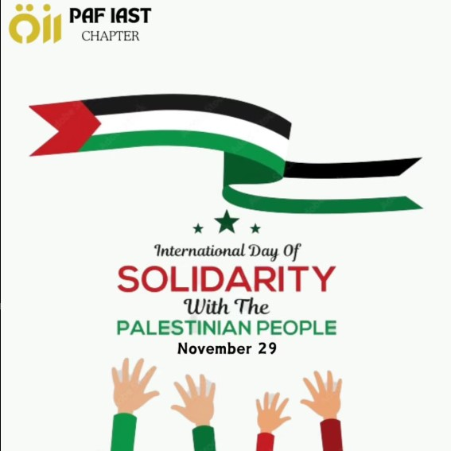
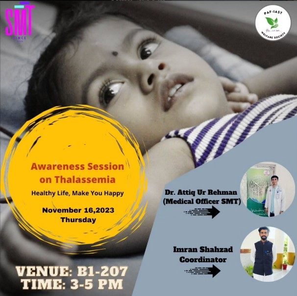
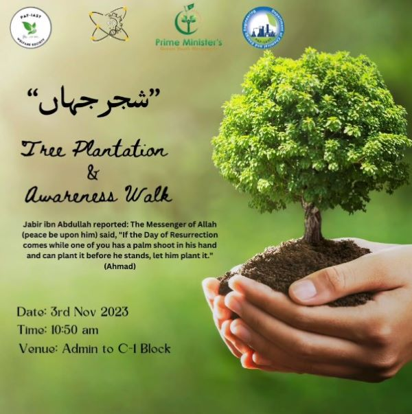
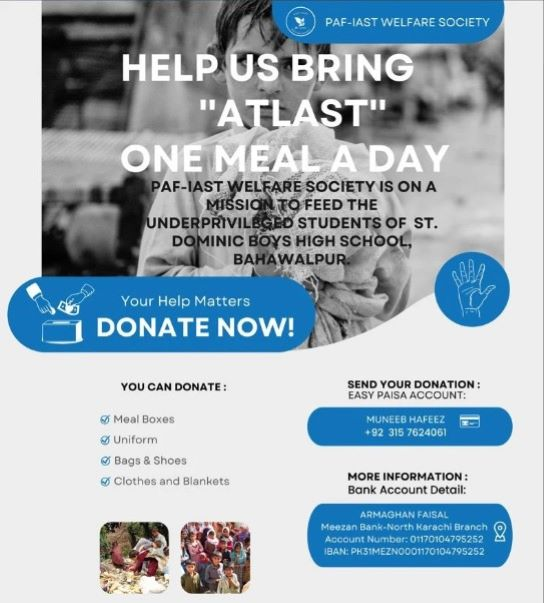

Society Objectives
- Encouraging Volunteerism and Social Outreach
- Raising Awareness on Social Issues
- Fostering Leadership and Personal Development
Society Details
Join us to enhance your artistic skills, participate in fun activities, and showcase your skills!
Cabinet Members
- Dr. Fida Hussain - Faculty Advisor
- Mr. Hassan Vaqas Quraishi - President
- Ms. Mahnoor Rasheed - Vice President
- Ms. Azka Noor - General Secratary
- Ms. Hania Rasheed - Director Event Management
- Mr. Inayat Ullah - Director Operations
Functions Of Society
- Organizing Charitable Events and Fundraising Initiatives
- Providing Resources and Support Services for Students
- Building Partnerships for Community Impact
How to Join:
Click the button below to fill the form and be a part of our team.
Join NowMedia Gallery




Contact Us
Follow us on social media or reach out to us through outlook